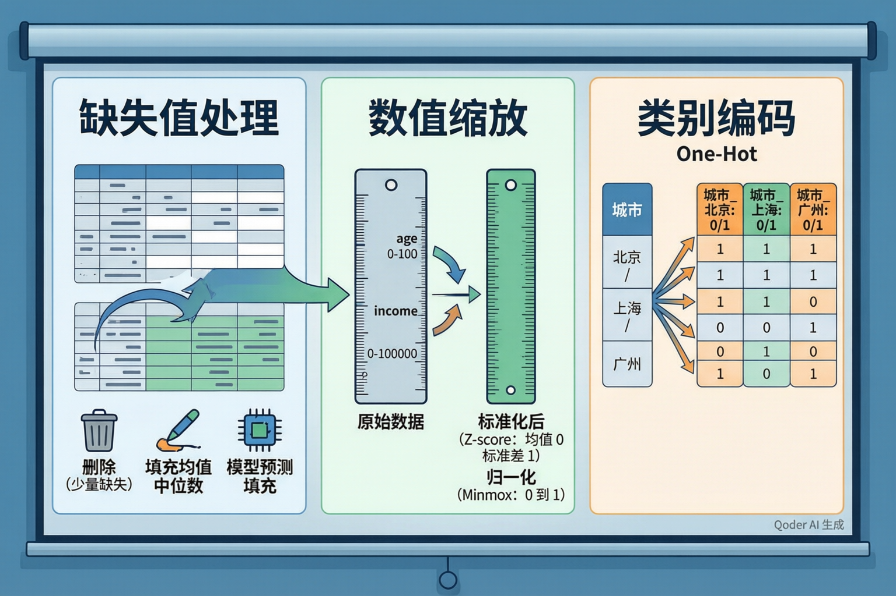
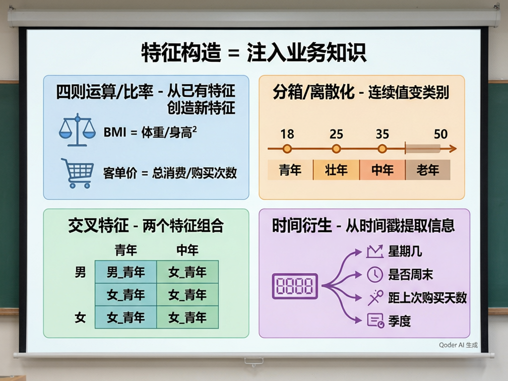
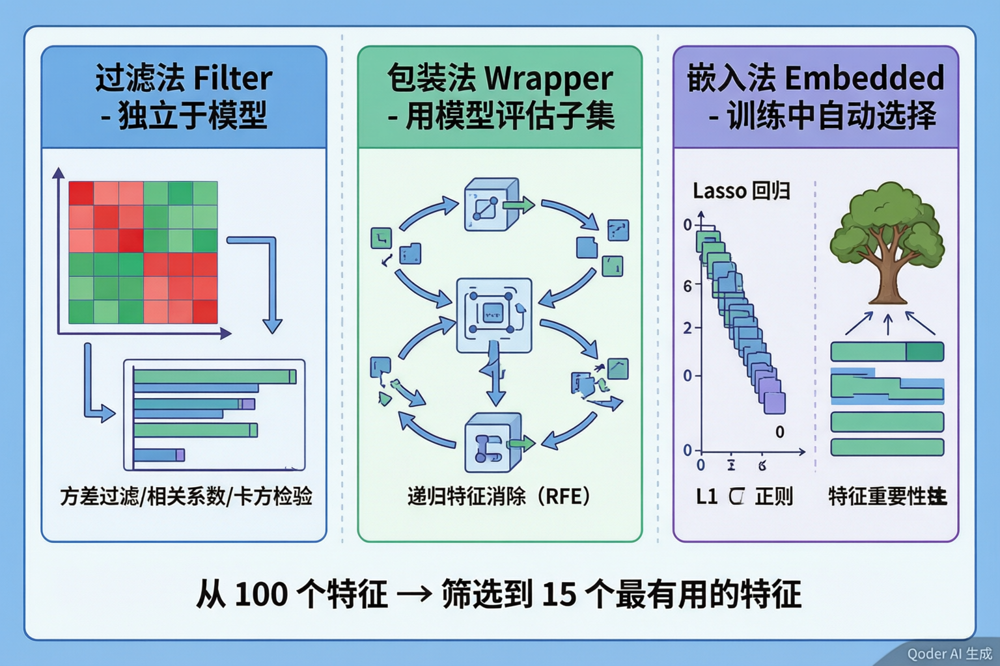
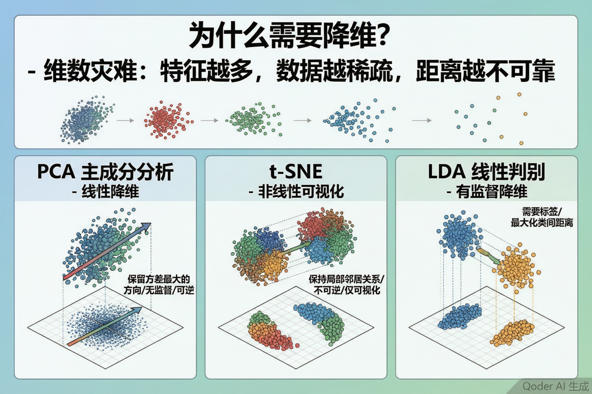

特征工程与数据预处理
算法只占20%，数据准备占80%——"垃圾进，垃圾出"是机器学习的第一定律
一个让你警醒的对比
假设你要训练一个客户价值预测模型。A 组用精心清洗、构造了 15 个高质量特征的数据，配合简单的决策树；B 组用原始脏数据（缺失值、未标准化、无特征工程），配合最先进的深度学习模型。猜猜谁赢了？
答案：A 组几乎总是赢。这就是为什么业界有句名言："数据和特征决定了机器学习的上限，而模型和算法只是在逼近这个上限而已。"

① 直接删除
如果缺失比例很低（<1%），直接删掉这些行或列，简单粗暴但有效。但如果缺失比例高或样本本来就少，删除会损失宝贵数据。
适用：缺失极少的场景
② 填充固定值
用均值、中位数、众数或一个特殊值（如-1）填充。最常用、最安全的方法。中位数对异常值更稳健。
适用：大多数场景的默认选择
③ 模型预测填充
用其他特征作为输入，训练一个小模型来预测缺失值（如 KNN 插补、回归插补）。更精确但计算开销大。
适用：缺失有规律、对精度要求高
④ 保留缺失信号
有时"缺失"本身就是一种信息。比如用户没填收入，可能意味着ta不愿透露——这本身就是一个特征。可以额外创建一个"是否缺失"的01列。
适用：缺失本身可能有业务含义
标准化 Standardization (Z-score)
结果：均值=0, 标准差=1
• 不把数据压缩到固定区间
• 保留异常值的影响（只是缩放了）
• 适合：假设数据服从正态分布的算法——PCA、线性回归、逻辑回归、神经网络
• 对异常值较敏感
归一化 Normalization (Min-Max)
结果：所有值∈[0, 1]
• 把数据严格压缩到[0,1]区间
• 保留原始分布的形状
• 适合：对距离敏感且不需要正态假设的算法——K-Means、KNN、图像处理的像素值
• 对异常值非常敏感（一个极值会压缩所有数据）
🧠 课堂小测
为什么不能直接映射成 1, 2, 3？
如果把"北京=1, 上海=2, 广州=3"，模型会认为"上海比北京大1，广州比上海大1"——这意味着三个城市之间有大小和顺序关系，但实际上并没有。这种错误的数值关系会误导模型。
One-Hot 编码：为每个类别创建一个独立的 0/1 列
| 客户ID | 城市 | 城市_北京 | 城市_上海 | 城市_广州 |
|---|---|---|---|---|
| 001 | 北京 | 1 | 0 | 0 |
| 002 | 上海 | 0 | 1 | 0 |
| 003 | 广州 | 0 | 0 | 1 |
| 004 | 北京 | 1 | 0 | 0 |
✅ 优点
• 消除了错误的顺序关系
• 每个类别独立表示，模型可以自由学习每个类别的影响
• 适用于绝大多数模型
⚠️ 注意事项
• 如果类别数量很多（如"商品ID"有10万种），One-Hot会创建10万列——维度爆炸
• 此时需要用目标编码（Target Encoding）或 Embedding 等其他方法
• 记得去掉一列避免多重共线性（drop='first'）

① 四则运算 / 比率
从已有特征通过加减乘除创造新特征。
例：BMI = 体重/身高²、客单价 = 总消费/购买次数、利润率 = 利润/收入
② 分箱 / 离散化
把连续值切成几段变成类别。
例：年龄→"青年/壮年/中年/老年"、消费金额→"低/中/高"
好处：捕捉非线性关系、对异常值不敏感
③ 交叉特征
两个或多个特征组合形成新特征。
例：性别×年龄段 → "男_青年""女_中年"等，城市×品类 → "北京_电子产品""上海_美妆"
④ 时间衍生
从时间戳中提取丰富信息。
例：从"购买时间"衍生出"星期几/是否周末/距上次购买天数/是第几季度/是否节假日"

过滤法 Filter
独立于模型，在训练之前就筛选。计算每个特征与目标的相关性（方差、相关系数、卡方检验），设定阈值淘汰低相关特征。
✅ 速度快，适合初筛
⚠️ 不考虑特征之间的交互
包装法 Wrapper
用模型评估特征子集的好坏。代表：RFE（递归特征消除）——反复训练模型，每次去掉最不重要的特征，直到剩下目标数量。
✅ 效果通常最好
⚠️ 计算量最大
嵌入法 Embedded
在训练过程中自动选择。代表：Lasso 回归（L1正则化把不重要特征的权重压缩到0）、决策树的特征重要性排名。
✅ 兼顾效果和效率
⚠️ 依赖于所选模型
快速淘汰
从100→50
训练中筛选
从50→20
精细选择
从20→15
实践中常组合使用：先用过滤法快速淘汰明显无关的特征，再用嵌入法或包装法做精细筛选。

为什么需要降维？——维度灾难
随着特征维度增加，数据点之间的距离变得越来越"相似"——在高维空间中，几乎所有点之间的距离都差不多。这使得基于距离的算法（KNN、K-Means）在高维数据上失效。同时，高维数据无法可视化（人类只能理解2D/3D），训练也更慢。
| 方法 | 类型 | 核心思想 | 优点 | 局限 |
|---|---|---|---|---|
| PCA | 线性·无监督 | 找到方差最大的方向（主成分），把数据投影上去 | 可逆、可解释（每个主成分的贡献率）、速度快 | 只能捕捉线性关系 |
| t-SNE | 非线性·无监督 | 保持局部邻居关系——高维空间中近的点在低维中也近 | 可视化效果极好，能展现清晰的簇结构 | 不可逆、仅适合可视化、速度慢、参数敏感 |
| UMAP | 非线性·无监督 | t-SNE的进化版，兼顾全局结构和局部关系 | 比t-SNE快、保留更多全局结构 | 较新，参数理解门槛稍高 |
| LDA | 线性·有监督 | 找到让不同类别"分得最开"的投影方向 | 利用标签信息，分类场景下降维效果优于PCA | 需要标签、最多降到K-1维（K=类别数） |
🧠 课堂小测
有缺失·量纲乱
有文字·100维
填缺失·标准化
One-Hot编码
四则·分箱·交叉
→120维
过滤+嵌入
→25维
→15维
保留95%方差
真实案例：客户流失预测的数据准备
| 步骤 | 操作 | 输入 | 输出 |
|---|---|---|---|
| 预处理 | 中位数填缺失年龄、Z-score标准化金额、One-Hot编码城市(3类) | 8列原始数据 | 12列干净数据 |
| 特征构造 | 构造客单价=总消费/购买次数、距上次购买天数、购买频率等级(高/中/低)、是否周末购买 | 12列 | 18列 |
| 特征选择 | 方差过滤去常值→相关系数去冗余→随机森林重要性取Top10 | 18列 | 10列 |
| 降维(可选) | 如果还需进一步压缩或可视化，PCA降到3维（散点图） | 10列 | 3维/10列 |
💡 核心认知 → 数据和特征决定上限，模型只是在逼近上限 —— "垃圾进，垃圾出"
↳ ① 基础预处理 → 缺失值（删/填/预测/保留信号）→ 标准化 vs 归一化（不同算法需要不同）→ One-Hot编码（避免虚假顺序）
↳ ② 特征构造 → 四则运算/比率 → 分箱离散化 → 交叉特征 → 时间衍生 → 本质：注入业务知识
↳ ③ 特征选择 → 过滤法（独立快筛）→ 包装法（模型评估）→ 嵌入法（训练中筛选）→ 三步组合策略
↳ ④ 降维 → PCA（线性·保留方差）→ t-SNE/UMAP（非线性·可视化）→ LDA（有监督·最大化类间距）
1. 数据预处理是机器学习的"入场券"——缺失值不处理、量纲不统一、类别不编码，绝大多数模型根本无法工作。
2. 特征构造是"增值"环节——好的特征比好的算法更管用。把业务知识翻译成数学语言，这是数据科学家最核心的能力之一。
3. 特征选择是"瘦身"——多余的噪音和冗余特征会降低模型效果和训练速度。先用过滤法初筛，再用嵌入法或包装法精选。
4. 降维 ≠ 特征选择——特征选择保留原始特征，降维创造新特征（如PCA主成分）。两者目标相同（减少维度），但手段不同。
你现在已经理解了机器学习中数据准备的完整四步流程。记住：特征工程不是"锦上添花"，而是决定模型成败的"地基工程"。继续深入的话，可以探索自动化特征工程（Featuretools）、深度学习的表示学习（Representation Learning）、以及大规模数据下的特征存储和特征服务（Feature Store）。